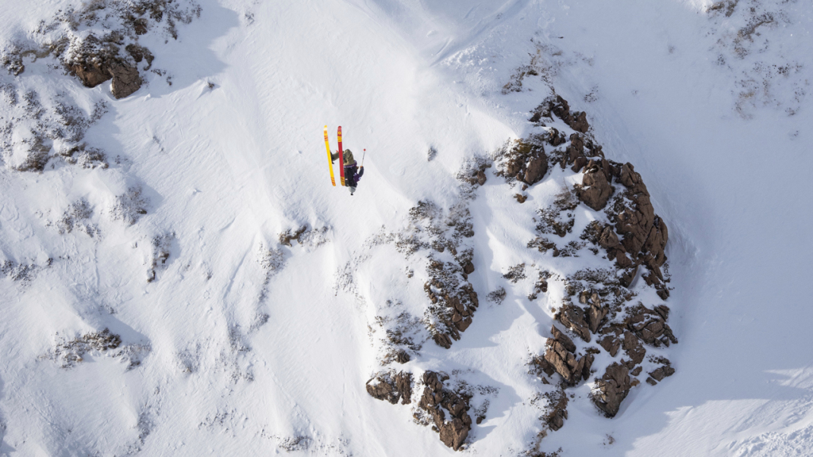

- 
-
BIG TRICKS AND PERFECT TURNS EARN SECOND FREERIDE WORLD TOUR WIN FOR AMERICAN IN AUSTRIA
BY JON JAY DATE MARCH 20, 2021The 2021 Freeride World Tour (FWT21) event in Fieberbrunn, Austria delivered some of the biggest lines possible during a very warm March in the Alps. The FWT declared last week that there would only be one event in Austria, meaning Saturday’s competition was the last chance for many athletes to qualify for the Verbier Xtreme final as well as qualify for next year’s FWT.Read more
The first skier of the day, Sweden’s Reine Barkered, opened things up by dropping straight to the famed Eagle Cliff, a committed series of drops that cut across the Wildseeloder competition face. After stomping his first big air, Barkered cut across the venue and popped a rollover into refrozen avalanche debris. With his legs apparently made of steel, the Swede rode away cleanly and earned a score of 89.00, setting a very high standard early on.
After Barkered’s super-fast run, the majority of skiers dropped into the more playful, poppy terrain on the looker’s left of the venue. American Ross Tester, who was the sixth man to ski out of the gate, executed a textbook backflip and spun a smooth 360 in this section, but what really stood out was his confident and stylish turns between the two tricks. His slash on the wind lip and perfect arcs in particular looked more like he was skiing for the cameras instead of just trying to survive the venue.Ross Tester has now won two competitions during his rookie Freeride World Tour season and a Polish rookie broke through in the women's field.
-

-
ACCESS TO SKIING IS NOT EQUAL—HE HAS A PLAN TO CHANGE THAT
BY SAMANTHA BERMAN DATE MARCH 19, 2021Denver native Quincy Shannon knows that his upbringing—spending weekends in the mountains nurturing a love for the ski lifestyle—was not the typical experience for a Black man. He has his mother, who ran a ski program that introduced inner city youth to skiing, to thank, and he is now working to pass down a similar love of the mountains and the active lifestyle to his young daughter, Imani. Shannon shares why he skis, his background, his inspirations, and how he hopes to parlay his passion for skiing into a way to draw more BIPOC to the sport.Read more
Because he was introduced to it early. My mom was part of a Black ski club called the Slippers-N-Sliders, so I’ve been skiing since I was 3 years old. Throughout my childhood I was introduced to all the stuff that I love to do now—skiing, hiking, climbing. I was lucky to be part of a small cohort of people in my neighborhood who liked to get up into the mountains.
To fight misconceptions. When I was a sophomore in high school, I was telling some friends about my weekend skiing, and one of them said ‘you don’t come off like a whitewashed black guy.’ I found out that most of them had never even been to the mountains, much less skiing. They said, ‘That’s not a place for us.’ The more people I talked to, the more I realized it was a truly unique experience among Black people.
Because he wants to enact change for his community. Over the summer I began to form several partnerships through Ski Noir at least in part because of the George Floyd protests. The sustainability department at Aspen reached out about the job pipeline, to get more Blacks employed in Aspen. I was very apprehensive at first, just wondering if this was them really wanting to work with us because we are a missing demographic in the mountains, or because the work pool had dried up because the borders were closed. They were honest that it was a little bit of both, and I appreciated that they were really open to create a partnership and move forward. I worked with them to figure out what the job pipeline would look like, but also making sure that it wasn’t just placing Blacks in entry-level jobs. I asked ‘What else are you doing around diversity, how are you working to make more people of color feel comfortable in the mountains?’Quincy Shannon knows what’s stopping more Black people from skiing and he wants to use his voice to help grow the sport and make the mountains accessible for all.
-

-
MIKAELA SHIFFRIN IS ‘PUSHING HER LIMITS TO KEEP UP’ IN CHANGING WORLD CUP SLALOM LANDSCAPE
BY JENNY WIEGAND DATE MARCH 18, 2021After a nail-biter of a finale in Lenzerheide, Switzerland, the 2021 World Cup Tour has come to an end, and for only the third time in the last nine seasons, Mikaela Shiffrin did not walk away with a World Cup Crystal Globe.Read more
Shiffrin was ranked third in the slalom standings heading into the final race of the season on March 20 and had a narrow shot at the title—she would need to win the race, and would need Petra Vlhova from Slovakia, the leader in the slalom standings, to finish third or lower.
After the first run, it looked like the stars could align for Shiffrin. The American sat in third, 0.90 seconds off the pace set by Austria’s Katharina Liensberger. Vlhova, meanwhile, slotted into sixth after a conservative first run.
But in the end, 0.90 seconds proved too big of a margin to overcome. Despite risking it all in the second run and nearly missing a gate just before the finish as a result, Shiffrin finished the 2021 season ranked second in the world to Liensberger in the slalom discipline. The Austrian claimed her first World Cup title after a blazing second run that saw her crossing the finish more than a second ahead of the competition.It seems like just yesterday that I was doing an interview saying that we would be really lucky to ski this season at all, let alone be able to have a World Cup race season. And if we had one, I wasn’t sure if I was going to be ready to race in it. There was definitely a lot of uncertainty, and definitely a lot of self-doubt.